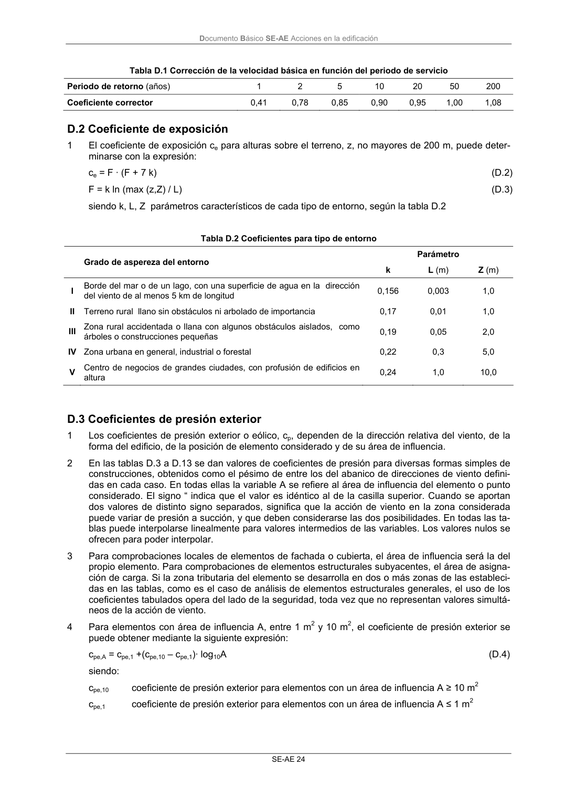

DB-SE-AE Acciones en la edificación · edición 2009-04 · capa oficial
Documento DB-SE-AE-oficial · SHA-256 del PDF 26116e5088955f0c6963a6187270cad282e1e7bf5a53a90f695c8fa50b4e4487
Copia fiel del PDF fuente · Fuente oficial
Ficha de la disposición en la fuente oficial
Formatos: JSON del segmento · Markdown
D.2 Coeficiente de exposición 1 El coeficiente de exposición ce para alturas sobre el terreno, z, no mayores de 200 m, puede deter- minarse con la expresión: ce = F · (F + 7 k) (D.2) F = k ln (max (z,Z) / L) (D.3) siendo k, L, Z parámetros característicos de cada tipo de entorno, según la tabla D.2 Tabla D.2 Coeficientes para tipo de entorno Parámetro Grado de aspereza del entorno k L (m) Z (m) I Borde del mar o de un lago, con una superficie de agua en la dirección del viento de al menos 5 km de longitud 0,156 0,003 1,0 II Terreno rural llano sin obstáculos ni arbolado de importancia 0,17 0,01 1,0 IIIZona rural accidentada o llana con algunos obstáculos aislados, como árboles o construcciones pequeñas 0,19 0,05 2,0 IV Zona urbana en general, industrial o forestal 0,22 0,3 5,0 VCentro de negocios de grandes ciudades, con profusión de edificios en altura 0,24 1,0 10,0
